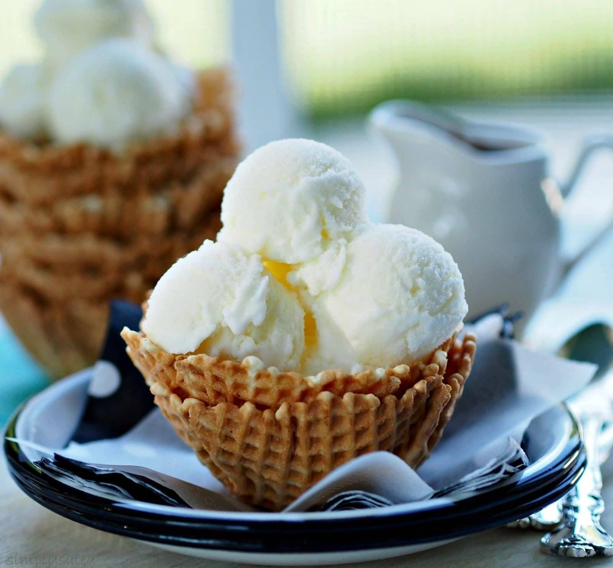

Vanilla Ice Cream
⭐⭐⭐⭐⭐ 4.9 Rating | ⏱ 6 Hours (Including Freezing) | 🍽 6 Servings
Category
Dessert
Difficulty
Easy
Calories
220 kcal
Cooking Style
Frozen Dessert
📋 Ingredients
- 2 cups Fresh Cream
- 1 cup Full Cream Milk
- ½ cup Sugar
- 1 tsp Vanilla Essence
- 2 tbsp Milk Powder (Optional)
- Dry Fruits or Chocolate Chips (Optional)
🍳 Required Utensils
- Mixing Bowl
- Electric Mixer or Whisk
- Measuring Cups
- Freezer-safe Container
- Spatula
- Ice Cream Scoop
📖 Introduction
Vanilla Ice Cream is one of the world's most loved frozen desserts. It has a smooth, creamy texture and a rich vanilla flavour. It can be enjoyed on its own or served with cakes, brownies, and fruit salads.
🔬 Principle
Ice cream is prepared by mixing cream, milk, sugar, and flavouring. During freezing, air is incorporated into the mixture, creating a soft and creamy texture while preventing large ice crystals from forming.
👨🍳 Procedure
- Pour fresh cream into a mixing bowl.
- Whisk until slightly thick.
- Add milk and sugar.
- Mix until the sugar dissolves completely.
- Add vanilla essence.
- Add milk powder if using.
- Whisk for 5–7 minutes.
- Pour the mixture into a freezer-safe container.
- Freeze for 2 hours.
- Remove and whisk again to make it creamy.
- Freeze for another 4 hours or overnight.
- Scoop into serving bowls.
- Decorate with chocolate syrup, nuts, or fruits.
- Serve chilled.
⚠ Precautions
- Use fresh cream for the best texture.
- Mix sugar completely before freezing.
- Keep the container tightly closed.
- Do not repeatedly thaw and refreeze.
- Store below -18°C.
💡 Chef Tips
- Add crushed Oreo biscuits for cookies & cream flavour.
- Mix chocolate chips for extra crunch.
- Top with fresh strawberries or mango pieces.
- Drizzle chocolate or caramel syrup before serving.
- Freeze overnight for the best consistency.
🥗 Nutrition Facts
| Nutrient | Amount |
|---|---|
| Calories | 220 kcal |
| Protein | 4 g |
| Carbohydrates | 20 g |
| Fat | 14 g |
| Calcium | 120 mg |
🍽 Serving Suggestions
- Serve with chocolate cake.
- Enjoy with brownies.
- Top with fresh fruits.
- Serve with waffles or pancakes.
- Drizzle chocolate or caramel syrup.
🌿 Health Benefits
- Milk provides calcium for strong bones.
- Contains protein from dairy.
- Provides quick energy.
- Good source of vitamins A and D.
- Best enjoyed occasionally as a dessert.
✅ Result
The prepared Vanilla Ice Cream should be smooth, creamy, and rich in vanilla flavour. It should have a soft texture without large ice crystals and be served chilled with your favorite toppings.
🎥 Watch Recipe Video
Learn the complete recipe by watching the step-by-step video.
▶ Watch on YouTube